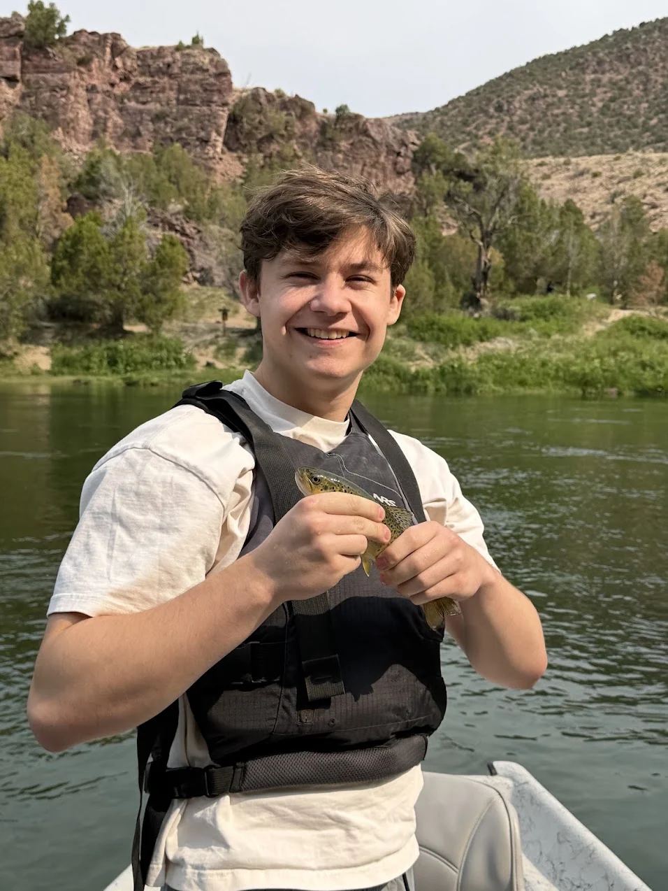
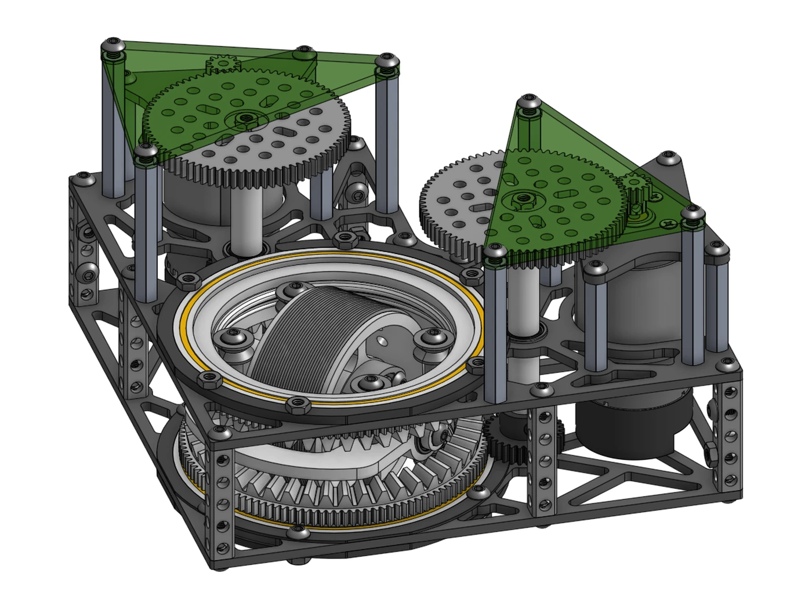
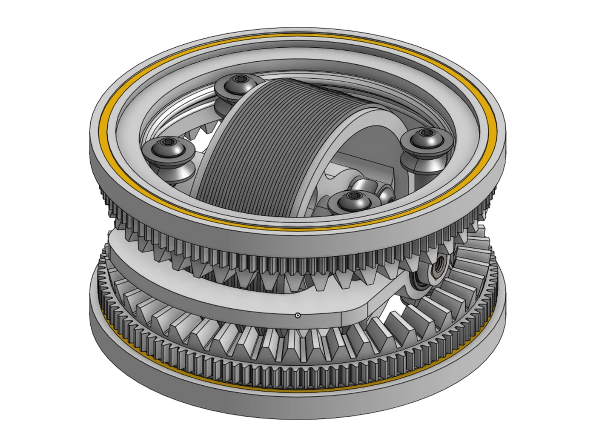
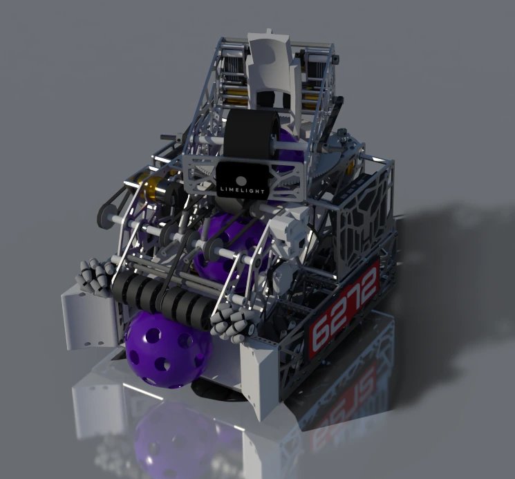
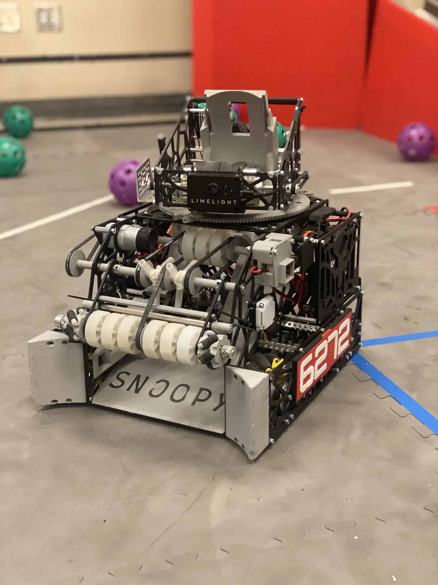
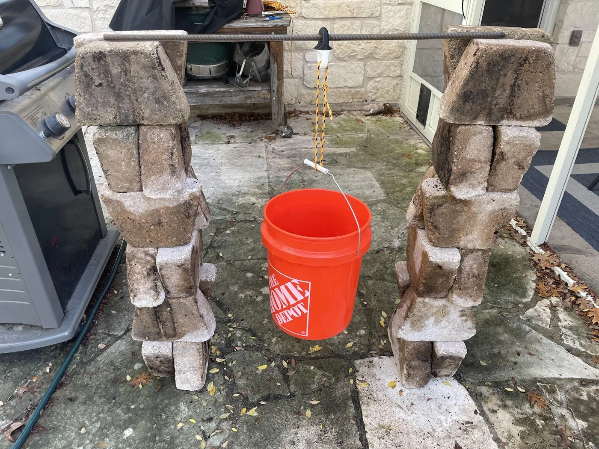
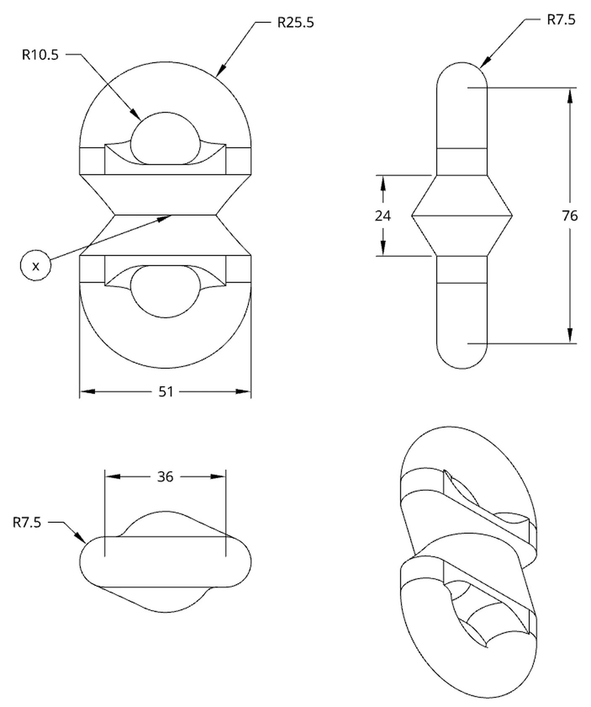
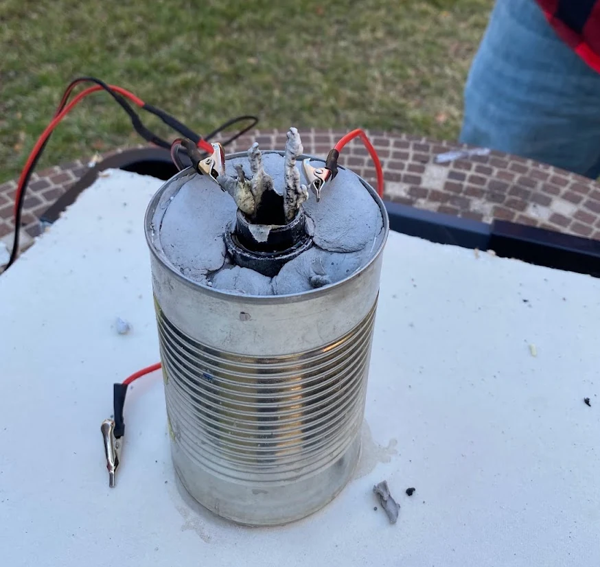
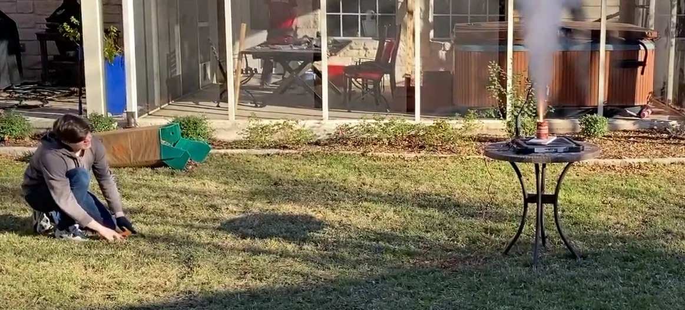

Thomas Kloke
I start with an idea, build it, and keep improving it until it works.

Differential swerve drive
One wheel, two motors, no separate steering motor.
A differential swerve module uses two motors that share the job of steering and driving. When they spin the same direction, the module steers. When they spin in opposite directions, the wheel drives. I'm building one from scratch, with encoder feedback and controller-based programming.
Why not mecanum?
Mecanum wheels are a common way to get a robot moving in any direction, but they give up stability: a mecanum robot gets pushed around easily and can't resist other robots. A differential swerve module keeps the any-direction movement while the wheel holds a strong grip on the floor. It adds two more advantages. Both motors share the load and drive the wheel together, which raises the torque at the wheel well above a mecanum setup, and control is more precise.
Design challenges
The biggest problem so far is PLA flexing under load, and it's a main reason for the planned aluminum rebuild. The other was the bevel gears at the heart of the differential. I used Tredgold's approximation to design them, and had to work out how much backlash tolerance to build in while doing it.
Electronics
Two goBILDA 5000 Series 12VDC brushed motors are mounted on the module. They'll be driven by a Cytron MDD20A dual-channel driver, chosen so the project doesn't need a custom PCB. The driver and the rest of the electronics are on order, so the wiring and control code come next.
Where it stands
The mechanical prototype is almost entirely 3D-printed PLA, printed on my own printer. Next I'm moving to an aluminum frame and CNC-machined parts for smoother, more accurate operation, and using the build to grow my electronics skills.
Explore the module


The full module, rendered from my CAD assembly.
2025–2026 World Championship robot
Iron Eagles Robotics, FIRST Tech Challenge.
I was co-captain and hardware engineering lead of Iron Eagles Robotics until April 2026. This is Snoopy, our 2025-2026 robot. It took us to the FIRST World Championship in Houston, where we went 9-1 in qualification matches and ranked 3rd in the Goodall Division after qualifications. We also earned multiple judged awards over the season.
Auto-aiming turret
The mechanism I'm proudest of is the auto-aiming turret. It calculates the turret angle and the flywheel's angular velocity, so the robot can score from anywhere on the field.
An intake shaped by our KPIs
Our reliability KPIs showed that the intake wasn't pulling in game pieces as fast as we wanted. In response, we developed our own dual-material silicone wheels, combining 20A and 30A silicone into a web-like grip. They increased the intake's reliability by 40%.
My role
I led the technical development of the robot and put in over 1,000 hours across design, manufacturing, testing, and team leadership. I directed its iterative development from CAD and prototyping through manufacturing and competition, prioritizing improvements by reliability KPIs, performance, and match strategy.
On the robot itself, I focused on the turret, intake, and transfer mechanisms. Teammates focused on weight distribution, packaging (making the best use of space), and the drivebase. I also coordinated work across mechanical design, programming, strategy, and outreach, and mentored new members as they built their technical skills.


- Team
- Iron Eagles Robotics, #6272
- Role
- Co-captain and hardware engineering lead, until April 2026
- Event
- FIRST World Championship, Houston, April 29 to May 2, 2026
- Result
- 9-1 in qualifications; 3rd in the Goodall Division after quals
- Also
- 1st at TAPPS Robotics
- Awards
- Think II, Control II, Think III, Design II
- My focus
- Turret, intake, and transfer mechanisms
- Effort
- 1,000+ hours
Bond strength of PLA and PETG-HF
How much force does it take to pull apart a part printed from two materials?
Why I did this
Multi-material printing, like the Bambu Lab AMS makes possible, lets one part be printed from several filaments. PLA is cheap, quick, and easy to print. PETG-HF has a much higher tensile strength, but it costs more and prints slower. If only one region of a part needs the strength, printing just that region in PETG-HF could save time and money, as long as the bond between the two materials is strong enough.
I wanted to know how strong that bond is and how it changes with the size of the contact area. The end goal was a graph of contact area against break force that others could use to predict how PLA and PETG-HF parts will hold up.
My hypothesis was that break force would rise linearly with contact area, across a range of about 177 to 1,963 mm².
How I tested it
I designed the test part in CAD: a loop at each end, one printed in PLA and the other in PETG-HF, joined at a circular interface in the middle. I made versions with the interface diameter running from 15 mm to 50 mm in 5 mm steps. I sliced them in Bambu Studio (3 wall loops, 50% rectilinear infill, printed upright, switching to PETG-HF at the interface) and printed them on a Bambu Lab X1C with the AMS. To limit print variation, I dried all filament at 70 °C for 8 hours, set the printer on anti-vibration feet, and had it re-level the bed before every print.
To test a part, I hung it from rebar resting on two brick stacks, with the PETG-HF half on the rebar and a rope tying the PLA half to a bucket. I added weights to the bucket in small increments until the part split in two. Each diameter was tested 2 to 6 times, 29 parts in all.


What I found
Break force rose from an average of 10 lbf (44 N) at 15 mm to 235 lbf (1,046 N) at 45 mm. An exponential fit through every individual trial gave f(x) = 2.09928 × 1.1004x, where x is the diameter in mm and f is the force in lbf.
Between 45 and 50 mm the growth stopped. The 50 mm parts averaged 222 lbf, slightly below the 45 mm average. A t-test found no significant difference between 45 mm and 50 mm (p = 0.615), while 40 mm and 50 mm were clearly different (p = 0.0001). That doesn't match my hypothesis, and it could mean the pattern changes past 45 mm.
Dividing by contact area shows the same thing another way. From 15 to 40 mm the parts broke at roughly 0.03 to 0.06 lbf per mm². At 45 and 50 mm that jumped to about 0.15 and 0.11 lbf per mm².
One trial Average, with bars at ±2 standard errors Exponential fit
See the data table
| Diameter (mm) | Area (mm²) | Trials | Average (lbf) | Average (N) | ±2 SE (lbf) | lbf per mm² |
|---|---|---|---|---|---|---|
| 15 | 177 | 2 | 10.0 | 44 | 0.0 | 0.057 |
| 20 | 314 | 3 | 12.5 | 56 | 0.0 | 0.040 |
| 25 | 491 | 3 | 15.8 | 70 | 1.7 | 0.032 |
| 30 | 707 | 3 | 23.3 | 104 | 14.5 | 0.033 |
| 35 | 962 | 4 | 48.8 | 217 | 14.9 | 0.051 |
| 40 | 1,257 | 4 | 57.5 | 256 | 32.0 | 0.046 |
| 45 | 1,590 | 4 | 235.2 | 1,046 | 42.1 | 0.148 |
| 50 | 1,963 | 6 | 221.9 | 987 | 31.1 | 0.113 |
Newtons use 1 lbf = 4.448 N. The last column is average force divided by area.
What I concluded
I rejected my null hypothesis, because break force changed in a consistent, predictable way as the diameter grew. But the relationship was not the straight line with area that I predicted.
What I'd do next
The end of the curve is the strangest part of the data, so I want to test beyond 50 mm. I'd also use smaller diameter steps, 2.5 mm or even 1 mm, to see the relationship more clearly.
- Project
- Independent materials research
- Materials
- PLA and PETG-HF, Bambu Lab filaments
- Variable
- Contact diameter, 15 to 50 mm in 5 mm steps (177 to 1,963 mm²)
- Measured
- Force to break the bond, in lbf and N
- Trials
- 29 parts, 2 to 6 per diameter
- Result
- 10 lbf (44 N) at 15 mm to 235 lbf (1,046 N) at 45 mm; flat from 45 to 50 mm
- Made with
- CAD, Bambu Lab X1C with AMS
Homemade rocket engines
Three burn rates, zero measurable thrust, one clear next question.
The question
In 2024, I built and tested homemade sugar-propellant rocket engines to find out how burn rate affects thrust. I made three versions of the same engine that differed in one ingredient, which set the burn rate: slow, medium, and fast. The fast version used red iron oxide as its burn-rate additive.
My hypothesis was that a faster burn would push down harder, because it would build more pressure at the throat of the nozzle. I expected the fast, iron oxide engine to produce the most force.
How a rocket engine makes thrust
Fuel and an oxidizer burn in the combustion chamber, and the hot gas is forced out through the nozzle. The narrowest point, the throat, raises the pressure and speeds the flow, and the push of the gas out the back is matched by an equal push on the rocket. How much thrust you get depends on how fast mass leaves the engine, since F = m·a, and impulse is force acting over time.
How I tested it
Each engine was a fiberglass casing with a cast fuel core and a nozzle. I weighed the fuel before and after each burn, mounted the engine upright on a scale, zeroed it, and filmed the scale while I ignited the engine by remote. Burn time came from the video. For comparison, two commercial engines gave 5.7 and 5.9 lbf.


What happened
None of the three homemade engines produced thrust the scale could measure. The burn-rate settings did work, though. The slow engine burned for 120 seconds, the medium for 30, and the fast for 19, which works out to an average burn rate of about 0.6, 3.0, and 4.9 grams per second.
See the burn data: table and fuel mass chart
| Engine | Starting fuel (g) | Final mass (g) | Mass lost (g) | Burn time (s) | Average burn rate (g/s) | Observed |
|---|---|---|---|---|---|---|
| Slow burn | 101.26 | 26 | 75.26 | 120 | 0.63 | No movement |
| Medium burn | 101.26 | 11 | 90.26 | 30 | 3.01 | No movement |
| Fast burn | 102.26 | 10 | 92.26 | 19 | 4.86 | Slight movement |
Final mass is the weight after the burn, minus the casing and nozzle. Burn rate is mass lost divided by burn time.
Slow burn Medium burn Fast burn
What I think went wrong
My leading suspect is the nozzle. The commercial engines had a noticeably smaller nozzle than the 29/38 mm one on mine, and I think the throat of mine did not restrict the flow enough to build the pressure the engine needed. The result shows how much thrust depends on combustion speed and flow rate: to lift a rocket with that nozzle, both would have to be much higher.
I'm keeping this project on the page on purpose. Engine design is hard, and a test that fails with a clear hypothesis about why is real engineering progress.
What I'd do next
Revisit the nozzle, since it's the most likely reason for the result.
- Project
- Rocket engine experiment, 2024
- Engines
- 3 homemade sugar-propellant engines (slow, medium, fast burn); 2 commercial for comparison
- Measured
- Thrust on a scale, fuel mass before and after, burn time
- Burn time
- 120 s slow, 30 s medium, 19 s fast
- Result
- No measurable thrust from the homemade engines; commercial engines 5.7 and 5.9 lbf
- Next
- Revisit nozzle size
About
I'm an Aerospace Engineering student at UT Austin, and I've spent the last few years trying to learn as much as I can by actually making things. That has meant robotics, CAD, 3D printing, programming, manufacturing, and a lot of projects where I started without knowing how I was going to make them work. I enjoy taking an idea, turning it into something real, and improving it until it works the way I imagined.
Competitive robotics was where a lot of that started for me. I've had opportunities to lead teams, teach younger students engineering skills, and work alongside people who know far more than I do. I'm still figuring out exactly where engineering will take me, but I know I want to keep solving difficult problems, learning new things, and building things that make a difference.
Skills
- CAD (Onshape), 3D printing, machining
- Python, JavaScript, C++
- Electronics, controls, materials testing
- Project management and peer mentorship